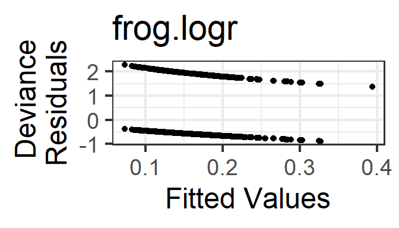
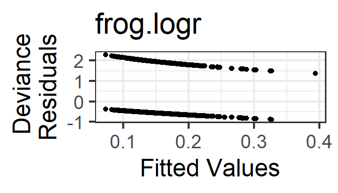
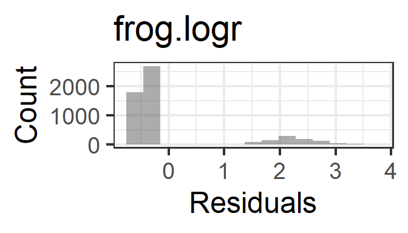
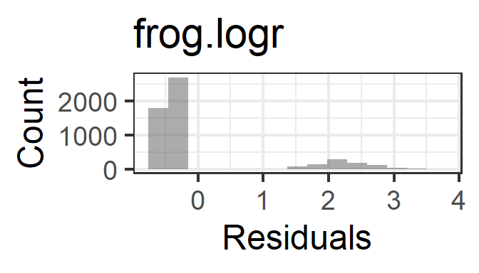

Chapter 9 Binary Regression
Our next goal: establish a framework for doing regression modelling when the response variable is a categorical one, with two categories.
9.1 Data Source
The dataset used here is on Alaskan wood frogs, detailing some physical characteristics, habitat characteristics, and the number of developmental and other abnormalities found in the frogs. It was originally obtained from:[http://datadryad.org/resource/doi:10.5061/dryad.sq72d].
The data file can be accessed online at: [http://sldr.netlify.com/data/FrogAbnormalities.csv]
## FrogID TotalLength TailLength Stage Year RoadDistance RoadType
## 1 25 19.19701 31.8285559 Stage 43 2011 22 Gravel
## 2 29 20.99035 0.1151022 Stage 46 2012 387 Gravel
## 3 29 20.50364 0.1055217 Stage 46 2011 781 Paved
## Abnormal SkeletalAbnormality EyeAbnormality orig.id
## 1 No No No 3450
## 2 No No No 2276
## 3 No No No 1589.2 Logistic Regression
Recall, for linear regression we fitted a model for continuous (numeric) response variable \(y\) according to:
\[y = \beta_0 + \beta_1 x_1 + \beta_2 x_2 + \beta_3 x_3 + ...\beta_k x_k + \epsilon \]
where \(x\)s are the \(k\) predictor variables, \(\beta\)s are the parameters to be estimated by the model, and \(\epsilon \sim N(0,\sigma)\) are the model residuals.
When our response variable was a count variable, we modified our equation to:
\[log(\lambda_i) = \beta_0 + \beta_1 x_1 + \beta_2 x_2 + \beta_3 x_3 + ...\beta_k x_k + \epsilon_{link} \]
positing that \(y_i \sim Pois(\lambda_i)\) for Poisson regression; similarly for quasiPoisson or negative binomial regression, we just replaced that Poisson distribution with a quasiPoisson or a negative binomial distribution.
What if our response variable is logical – a categorical variable with just two possible values? We will designate one of the two values a “success,” and then we want to predict the probability of success as a function of some set of predictors. What will our model equation look like in this case?
\[ logit(p_i) = \beta_0 + \beta_1 x_1 + \beta_2 x_2 + \beta_3 x_3 + ...\beta_k x_k + \epsilon_{link}\]
where the logit function is \(logit(x) = log(\frac{x}{1-x})\). This function maps probabilities to positive and negative real numbers, effectively “spreading them out” from the range 0-1 to the full range of real numbers. How does this equation relate back to our desired response variable? Well, \(i\)th observation of the response variable is assumed to follow a binomial distribution with probability \(p_i\) (\(y_i \sim Binom(n_i, p_i)\)). (\(n_i\) depends on the setup of the data – often n=1 for each row of the dataset, as here where each row is one frog. We can think of each frog as one binomial trial, with success/failure meaning abnormality/normality of the frog.)
9.3 Checking the data setup
We would like to model the proportion frogs with abnormalities as a function of a set of covariates. The variable Abnormal has values “Yes” and “No”. In R, if we use this (factor) variable as our response, how will R determine which level (value of the variable) is a “success”?
R uses the FIRST variable value as “failure” and the second as “success” – this makes sense if you imagine coding 0 for failure and 1 for success (and then sorting in numeric/alphabetical order). If you have a categorical variable with informative values, you will need to make sure that the “base” (first) level is the one you want to equate with “failure”.
## [1] "No" "Yes"If you do need to rearrange the levels, one way to do it is to use the forcats::fct_relevel() function. Example:
#ref will be the FIRST level after releveling
frogs <- frogs %>%
mutate(Abnormal = forcats::fct_relevel(Abnormal, ref='No'))
frogs %>% pull(Abnormal) %>% levels()## [1] "No" "Yes"9.4 Fitting a saturated model
Let’s try fitting a model for Abnormalities as a function of Stage, Year, RoadType, and RoadDistance. Why do you think these variables and not others were chosen?
Perhaps it makes sense that type and distance to road are proxies for urbanization, and frogs may do better in more pristine habitats. It also seems likely that there would be differences over time. There may also be differences by Stage, if frogs with severe abnormalities have trouble even surviving to the later/older stages.
frog.logr <- glm(Abnormal ~ Stage + factor(Year) + RoadType + RoadDistance,
data=frogs, family=binomial(link='logit'))
summary(frog.logr)##
## Call:
## glm(formula = Abnormal ~ Stage + factor(Year) + RoadType + RoadDistance,
## family = binomial(link = "logit"), data = frogs)
##
## Deviance Residuals:
## Min 1Q Median 3Q Max
## -0.8904 -0.6398 -0.5574 -0.4788 2.2886
##
## Coefficients:
## Estimate Std. Error z value Pr(>|z|)
## (Intercept) -0.3509350 0.4198798 -0.836 0.403268
## StageStage 43 0.1129785 0.1136966 0.994 0.320376
## StageStage 44 -0.0987133 0.1290558 -0.765 0.444338
## StageStage 45 -0.4616044 0.1301337 -3.547 0.000389 ***
## StageStage 46 -0.5954533 0.1451580 -4.102 4.09e-05 ***
## factor(Year)2001 -1.4231818 0.8393630 -1.696 0.089971 .
## factor(Year)2002 -1.3820162 1.1210725 -1.233 0.217664
## factor(Year)2003 -0.9744573 0.5216890 -1.868 0.061778 .
## factor(Year)2004 -1.4345710 0.4272057 -3.358 0.000785 ***
## factor(Year)2005 -1.1185067 0.4214799 -2.654 0.007960 **
## factor(Year)2006 -1.1232649 0.4229028 -2.656 0.007905 **
## factor(Year)2010 -0.4985424 0.4299638 -1.159 0.246253
## factor(Year)2011 -1.1674055 0.4163277 -2.804 0.005046 **
## factor(Year)2012 -1.0488208 0.4157733 -2.523 0.011650 *
## RoadTypePaved -0.1689634 0.0842935 -2.004 0.045020 *
## RoadDistance 0.0005653 0.0002471 2.287 0.022176 *
## ---
## Signif. codes: 0 '***' 0.001 '**' 0.01 '*' 0.05 '.' 0.1 ' ' 1
##
## (Dispersion parameter for binomial family taken to be 1)
##
## Null deviance: 4787.5 on 5370 degrees of freedom
## Residual deviance: 4701.4 on 5355 degrees of freedom
## AIC: 4733.4
##
## Number of Fisher Scoring iterations: 49.5 Link Functions
Here, we have used the logit link function, which is the most common. However, there are other functions that translate proportions to real numbers, and are sometimes used in regression for binary data. Two common options are:
- Probit regression: link=‘probit’
- Complementary log-log regression: link=‘cloglog’
There are not closed-form expressions for the the probit and complementary log-log functions that are easy to write down, so that is why the exact functions are not given here. As shown below, the shapes of these three functions are very similar. So it may come as no big surprise that frequently they provide similar goodness of fit to data (according to IC). If that is the case, choose logit (which makes some of the interpretation of results easier).

Note: figure is from [http://data.princeton.edu/wws509/notes].
9.6 Conditions
Under what conditions is a logistic regression model appropriate?
- Response variable is logical – you can characterize it as the outcome of a binomial trial (or a set of independent binomial trials). Some response variables can be expressed as proportions, but can not be well modelled with binomial regression. For example, you might take one-minute recordings in the woods and measure the proportion of each minute during which bird song was audible. The data will look like proportions, but you can’t think of them as binomial trials and should not model them with binomial regression (what is a “trial” here, and what is a “success”? Make sure you can answer those questions before using binomial regression.)
- Linearity: logit(p) should have a linear relationship with each predictor variable. (A bit hard to check - see solutions to HW8 for an example of how it can be done.)
- Independence: Same as usual.
- Mean-variance relationship: The Pearson or Deviance residuals will decrease as a function of fitted value, and should have approximately constant variance as a function of fitted value. But a residuals vs fitted plot is of almost no use to us – the examples later on show how you can expect it to look, and if it deviates from the expected appearance, try to figure out why and what is going on; but if it looks as expected, you can say “there is no evidence in this figure of a violation of the conditions of binary regression.”
- NO distributional assumptions about residuals.
9.7 Model Assessment Plots

gf_point(resid(frog.logr, type='pearson') ~ fitted(frog.logr)) %>%
gf_labs(title='frog.logr',
y=' Pearson\nResiduals',x='Fitted Values')
gf_point(resid(frog.logr, type='deviance') ~ fitted(frog.logr)) %>%
gf_labs(title='frog.logr',
y=' Deviance\nResiduals',x='Fitted Values')
gf_point(resid(frog.logr, type='response') ~ fitted(frog.logr)) %>%
gf_labs(title='frog.logr',
y=' Raw Response\nResiduals',x='Fitted Values')
gf_histogram(~resid(frog.logr, type='pearson'), bins=15) %>%
gf_labs(title='frog.logr',
x='Residuals', y='Count') 
 

The two “lines” in the residuals vs fitted plots correspond with the two possible values of the response variable in the data.
And remember - there is not a strict distributional assumption about the residuals (in other words, they don’t have to follow, say, a normal distribution), so we don’t really have to make a histogram of them. The one here is shown just to help you remember that you don’t have to check it, and if you do, it will look “strange” (bimodal like this) yet it is nothing to worry about.
9.8 Odds Ratios
The odds (or odds ratio) is \(\frac{p}{1-p}\) – the ratio of success to failure. So if P(success) = 0.75, then the odds will be \(\frac{0.75}{0.25}\) = 3 or “three to one” – you will usually succeed three times for every failure.
Remember, the logit function was \(logit(x) = log(\frac{p}{1-p})\)? In other words, the logit is the log of the odds ratio. This means that the coefficients of a binary regression model with logit link function have special interpretations in terms of odds ratios.
Let’s consider a simplified version of our model (just to make it easier to write out the model equation):
## (Intercept) StageStage 43 StageStage 44 StageStage 45 StageStage 46
## -1.4618893 0.1001146 -0.1094112 -0.4527238 -0.5119712So our model equation is:
\[ logit(p_i) = -1.46 + 0.10I_{s43} - 0.11I_{s44} - 0.45I_{s45} - 0.51I_{s46}\]
According to this model, the log-odds (logit(p)) for a Stage 42 frog is -1.46, so the odds of being Abnormal for a Stage 42 frog are \(e^{-1.46} = 0.23\).
The log-odds for a Stage 46 frog are -1.46 - 0.51 = -1.97, so the odds of it being Abnormal are \(e^{-1.97} = 0.14\).
The change in odds going from Stage 42 to 46 is then \(\frac{0.14}{0.23} = 0.61\) – the odds of a Stage 42 frog being abnormal are nearly double those of a Stage 46 frog.
Notice – we didn’t actually have to compute all that to find the 0.6 value!
We know that for Stage 46
\[ log(\frac{p}{1-p}) = -1.46 -0.51\] so
\[ \frac{p}{1-p} = e^{-1.46 - 0.51} = e^{-1.46}e^{-0.51}\]
And \(e^{-1.46}\) is the odds for Stage 42…aha! So, \(e^{-0.51} = 0.60\) is the multiplier on the odds ratio to go from stage 42 to 46. And in general, \(e^{\beta}\) is the multiplier on the odds ratio for a one-unit change in the predictor variable for which \(\beta\) is the model coefficient.
9.9 Model Selection
As usual:
require(MuMIn)
frog.logr <- update(frog.logr, na.action='na.fail')
mod.sel <- dredge(frog.logr, rank='AIC')
head(mod.sel,5)## Global model call: glm(formula = Abnormal ~ Stage + factor(Year) + RoadType + RoadDistance,
## family = binomial(link = "logit"), data = frogs, na.action = "na.fail")
## ---
## Model selection table
## (Int) fct(Yer) RdD RdT Stg df logLik AIC delta weight
## 16 -0.3509 + 0.0005653 + + 16 -2350.719 4733.4 0.00 0.590
## 12 -0.3426 + 0.0005161 + 15 -2352.740 4735.5 2.04 0.213
## 14 -0.3749 + + + 15 -2353.232 4736.5 3.03 0.130
## 10 -0.3653 + + 14 -2354.889 4737.8 4.34 0.067
## 15 -1.4510 0.0004694 + + 7 -2368.278 4750.6 17.12 0.000
## Models ranked by AIC(x)## (Intercept) factor(Year)2001 factor(Year)2002 factor(Year)2003
## -0.3535582013 -1.4237089763 -1.3808976121 -0.9748675931
## factor(Year)2004 factor(Year)2005 factor(Year)2006 factor(Year)2010
## -1.4331851168 -1.1210426509 -1.1258664109 -0.5125316516
## factor(Year)2011 factor(Year)2012 RoadDistance RoadTypePaved
## -1.1735417137 -1.0548360421 0.0005522245 -0.1658639112
## StageStage 43 StageStage 44 StageStage 45 StageStage 46
## 0.1093083878 -0.1003833764 -0.4577677670 -0.58867496989.10 Prediction Plots
Shown here are example prediction plots for Stage and RoadDistance. First, check out a summary table for the variables in the model to help determine fixed values.
## RoadDistance RoadType Stage Year
## Min. : 3.00 Gravel:3293 Stage 42: 829 2012 :1561
## 1st Qu.: 15.00 Paved :2078 Stage 43:1417 2011 :1433
## Median : 31.00 Stage 44: 901 2005 : 683
## Mean : 99.38 Stage 45:1191 2006 : 647
## 3rd Qu.: 83.00 Stage 46:1033 2004 : 605
## Max. :781.00 2010 : 300
## (Other): 142

How does this compare to the raw data?
## Stage
## Abnormal Stage 42 Stage 43 Stage 44 Stage 45 Stage 46
## No 0.8118215 0.7960480 0.8279689 0.8715365 0.8780252
## Yes 0.1881785 0.2039520 0.1720311 0.1284635 0.1219748bins <- cut(frogs$RoadDistance,breaks=c(0, 25, 50, 100, 250,800))
prop(~Abnormal=='Yes'|bins, data=frogs)## prop_TRUE.(0,25] prop_TRUE.(25,50] prop_TRUE.(50,100]
## 0.1516080 0.1925424 0.1379747
## prop_TRUE.(100,250] prop_TRUE.(250,800]
## 0.1694215 0.1613876But…remember, in the raw data, other predictors may also be influencing the patterns that you see in the data. In addition, we can look at the width of the confidence bands on the model estimates, and look at the model selection results to get an idea of whether this predictor is really important in the model or not. This is just an example to get you thinking about what prediction plots are showing you and what you can do with them!